Lecture 1 — Introduction to Computer Vision & Image Enhancement in the Spatial Domain
Slides © Dr. Khaled M. ElSayed, Zewail City. 56 slides.
s1.1 — Classical vs Modern Computer Vision
What is Computer Vision?
Why it matters: every algorithm in this course is a tool that helps a computer see, observe and understand. Knowing this framing makes every later lecture make sense.
Computer vision is a sub-field of AI that uses machine-learning / neural networks to teach machines to derive meaningful information from digital images, videos and other visual inputs, and then to make recommendations or take actions.
Slogan to remember: AI enables computers to think; CV enables them to See, Observe and Understand.
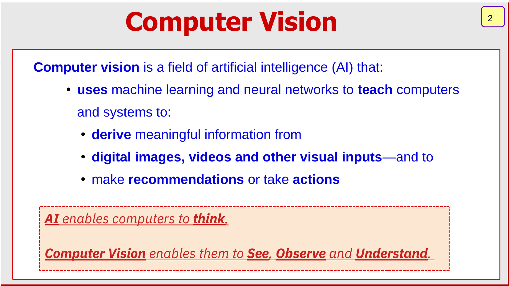
Two flavours: Classical CV vs Modern CV
Why it matters: the first half of the course is classical CV (hand-crafted features); the second half is modern CV (end-to-end deep models). Exam questions love to ask which one fits a given scenario.
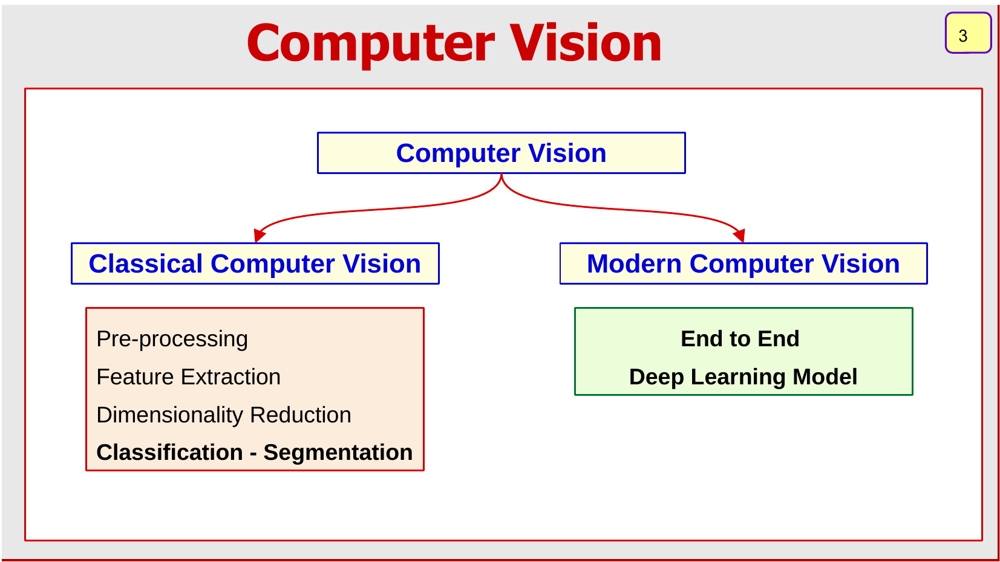
Classical CV = hand-crafted features. Pipeline: Pre-processing → Feature Extraction → Dimensionality Reduction → Classification/Segmentation.
Modern CV = end-to-end deep learning model. The CNN learns the features itself.
Same problem, two pipelines — OCR on a phone photo
- Classical: detect corners → affine-rectify → SVM / NN for OCR.
- Modern: CNN filters rectify + extract features → fully-connected layers classify characters.
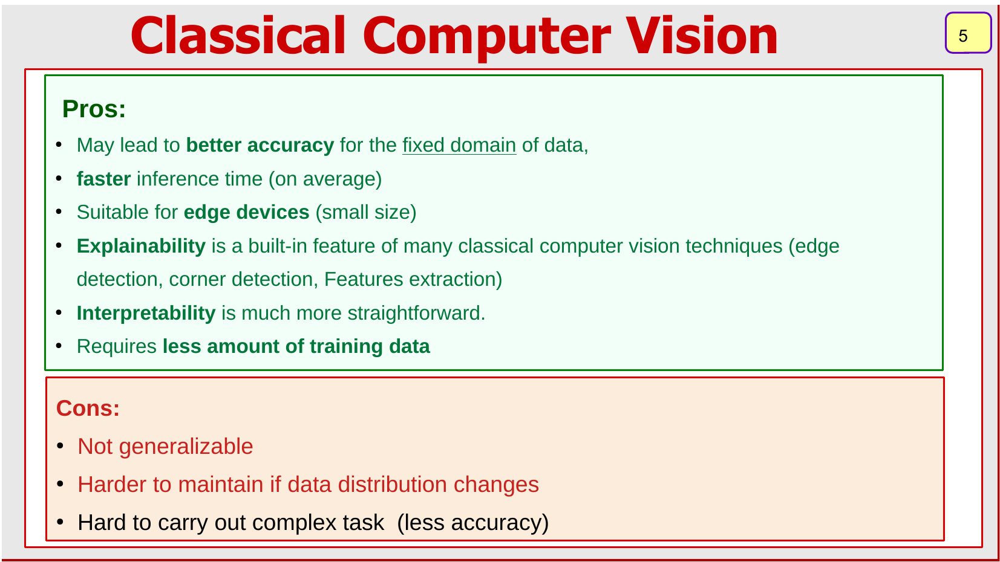
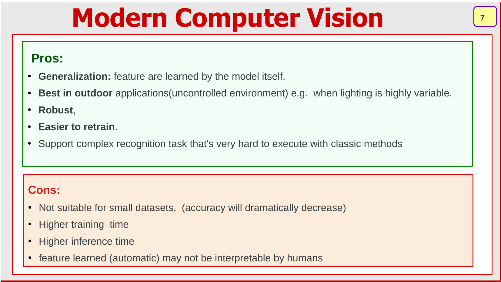
Compare the two — click for the table you should memorise.
| Aspect | Classical CV | Modern CV |
|---|---|---|
| Features | hand-crafted | learned by the model |
| Domain | fixed / controlled | generalises, good outdoors |
| Data needed | little | large |
| Inference time | fast (average) | slower |
| Edge devices | yes (small) | limited |
| Explainability | built-in | opaque |
| Hard tasks | weak | strong |
Common exam traps
- "Classical CV needs more data." — False. The opposite is true.
- "Modern CV is always more accurate." — Only on rich data; on tiny fixed-domain data classical can win.
- "Classical CV is always interpretable." — Interpretation is much more straightforward, but it is not magical; still requires effort.
Some CV tasks (memorise the menu)
Why it matters: the lectures map onto these tasks (classification, detection, segmentation, recognition…). Knowing the menu helps you place every algorithm.
Object detection & localisation, object recognition (classification), content-based image retrieval, pose estimation, OCR, facial recognition, emotion recognition, human activity recognition, object tracking, image restoration (fix lens / transmission damage), image inpainting (restore missing parts).
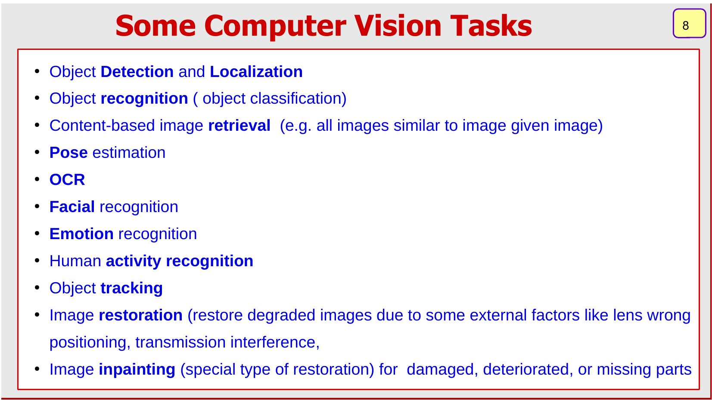
s1.2 — Pixel-based Image Enhancement
Image enhancement has two big families:
- Pixel-based: output pixel depends only on the input pixel value at the same location → Negative, Gamma, Histogram equalisation.
- Neighbourhood-based (local): output depends on a window around the pixel → Spatial filters (smoothing, ordered-statistics, sharpening).
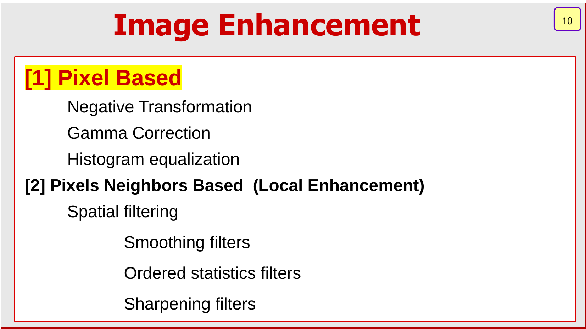
The general gray-level transform s = T(r)
Why it matters: every pixel-based method is just a different curve of $s=T(r)$. Recognising the curve on the exam is half the answer.
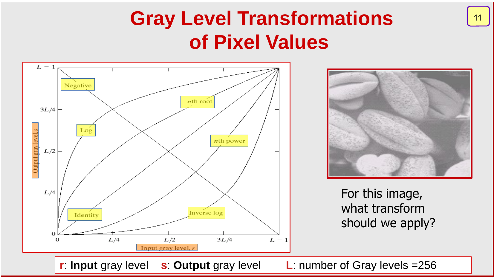
Symbols: r = input gray level, s = output gray level, L = number of gray levels (usually 256).
How to read the curve graph
Pick a point on the x-axis (input r). Move up to the curve, then read across to the y-axis (output s). A steep slope locally = high contrast in that input range; a flat slope = compressed contrast.(1) Negative transformation
Why it matters: dramatic visualisation tool for medical images and dark backgrounds — exam favourite for "name the transform applied".
Formula: $s = L-1 - r$, or for 8-bit images $s = 255-r$.
Black (0) becomes white (255), and vice versa.
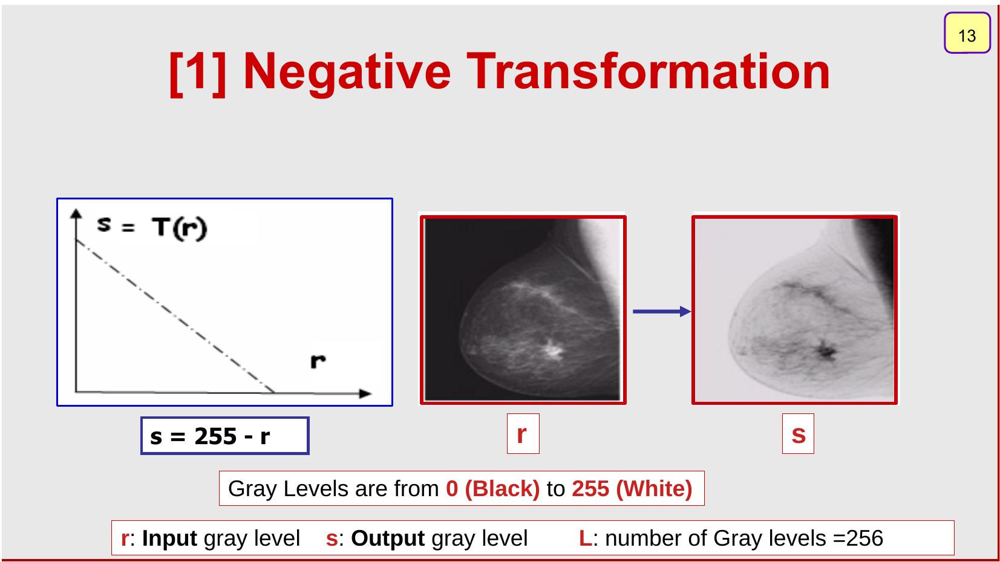
Worked example — apply $s=255-r$ to a 3×3 block
Input:[ 10 20 30 40 50 60 70 80 90]Output:
[245 235 225 215 205 195 185 175 165]
Answer
Dark. Negative flips intensities — bright detail in the original becomes dark detail in the output, and vice versa.(2) Gamma correction (power law)
Why it matters: digital cameras + displays use power-law non-linearities. You'll be asked to predict the visual effect of γ<1 vs γ>1.
Formula: $s = c\,r^{\gamma}$. Normalise $r\in[0,1]$ first; the output $s$ comes out in $[0,1]$.
- $\gamma < 1$ → curve bends up → dark regions get brighter → reveals shadow detail.
- $\gamma > 1$ → curve bends down → bright regions get darker → reveals highlight detail.
- $\gamma = 1$ → identity.
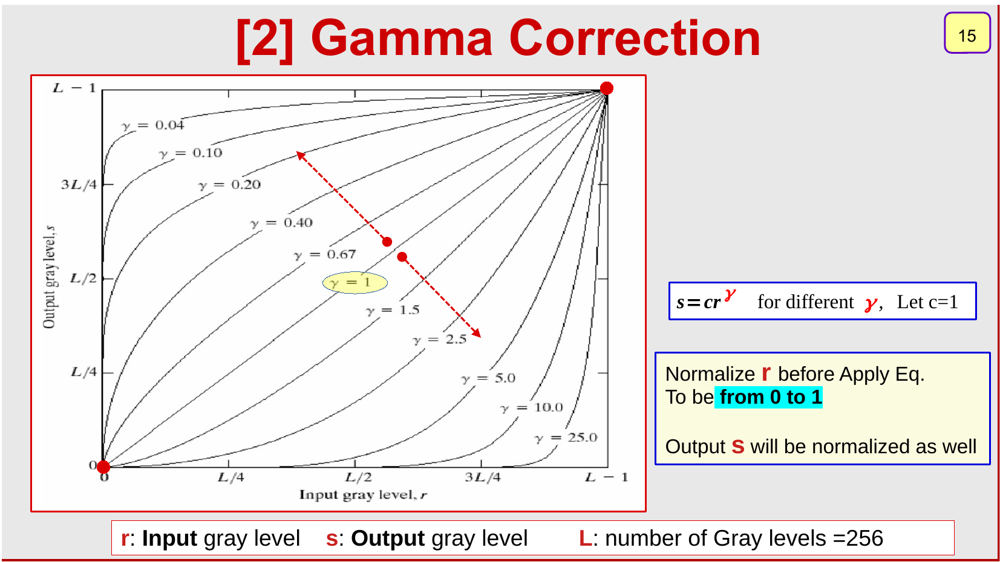
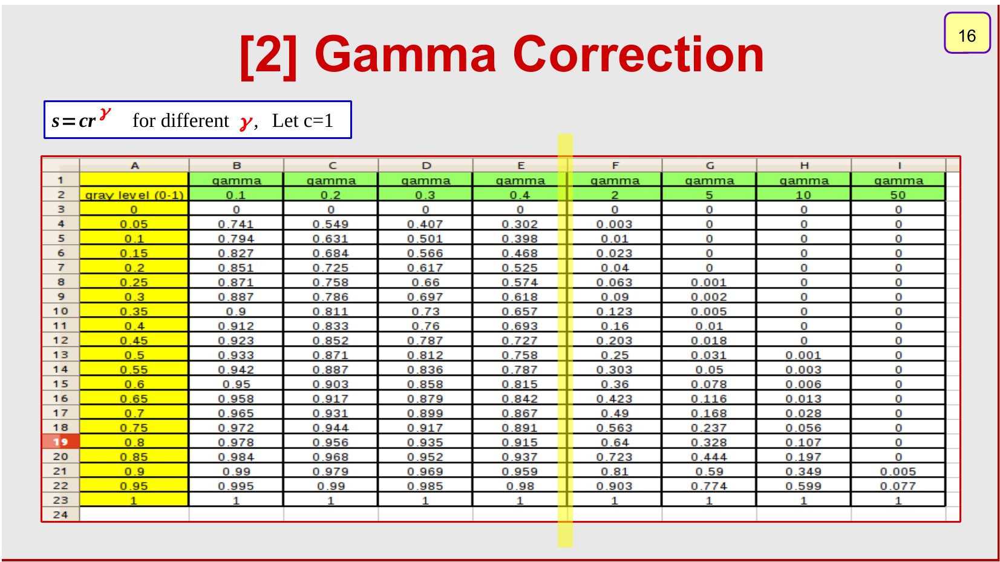
Worked example — pixel value 0.5 under several γ (c=1)
- γ = 0.4 → $s=0.5^{0.4}=0.758$
- γ = 1.0 → $s=0.5$
- γ = 2.5 → $s=0.5^{2.5}=0.177$
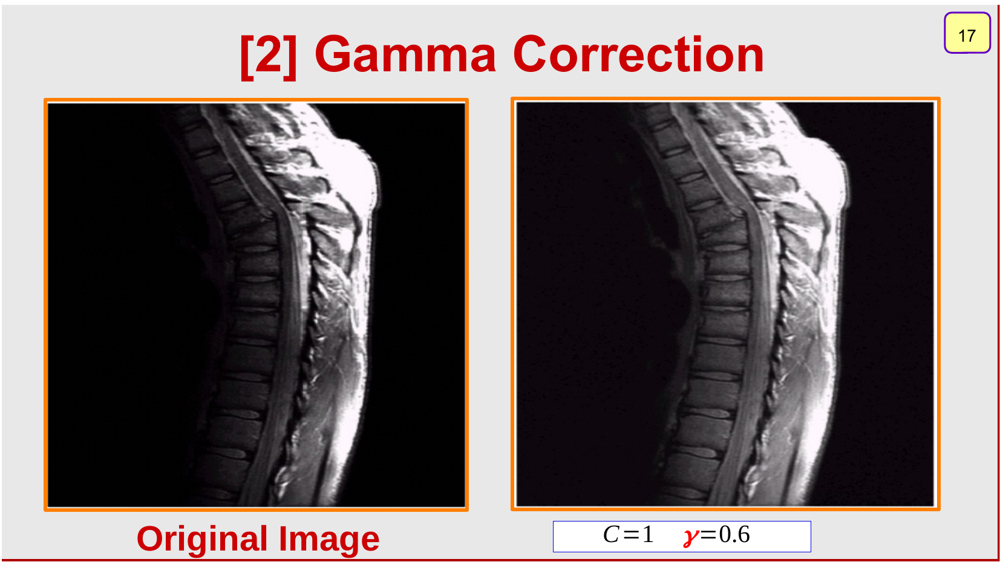
Trap
- Forgetting to normalise r to [0,1] before applying $r^{\gamma}$ — values explode or vanish.
(3) Histogram & Histogram Equalisation
Why it matters: this is the marquee pixel-based method. Expect a numerical 5×5/8-level toy problem on the final.
Histogram: $h(k)$ = number of pixels with gray level $k$. Used to diagnose dark, bright, low-contrast, high-contrast images.
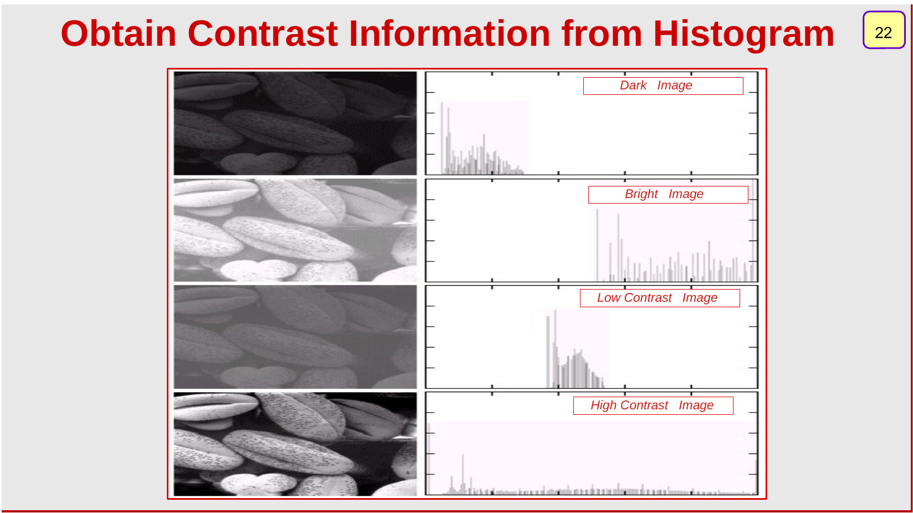
Goal of equalisation: find a transform $s = T(r)$ that produces an output histogram that is (approximately) uniform, i.e. the full dynamic range is used.
Discrete formula (the only one you need to memorise):
$$T(r)=\text{round}\Big(N\,\sum_{i=0}^{r} p(i)\Big)$$
where $p(i)$ is the probability of gray level $i$ (count/total) and $N$ is the maximum gray level (e.g. 7 for an 8-level image, 255 for an 8-bit image). The sum is just the cumulative distribution function (CDF) at level $r$.
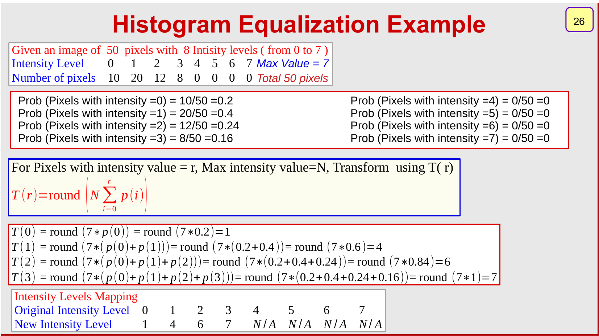
Replicate the slide example by hand (50 pixels, 8 levels)
Counts: $[10,20,12,8,0,0,0,0]$, total 50.Probabilities: $[0.2,0.4,0.24,0.16,0,0,0,0]$
CDF: $[0.2,0.6,0.84,1.0,1,1,1,1]$
Map $T(r)=\text{round}(7\cdot\text{CDF}(r))$: $[\;1,4,6,7,7,7,7,7\;]$
Mapping table → original {0,1,2,3} → new {1,4,6,7}. Output histogram fills the range.
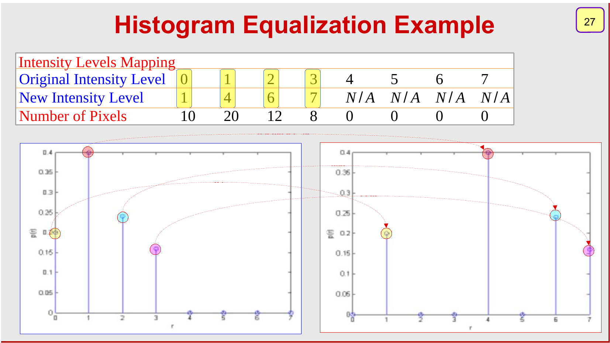
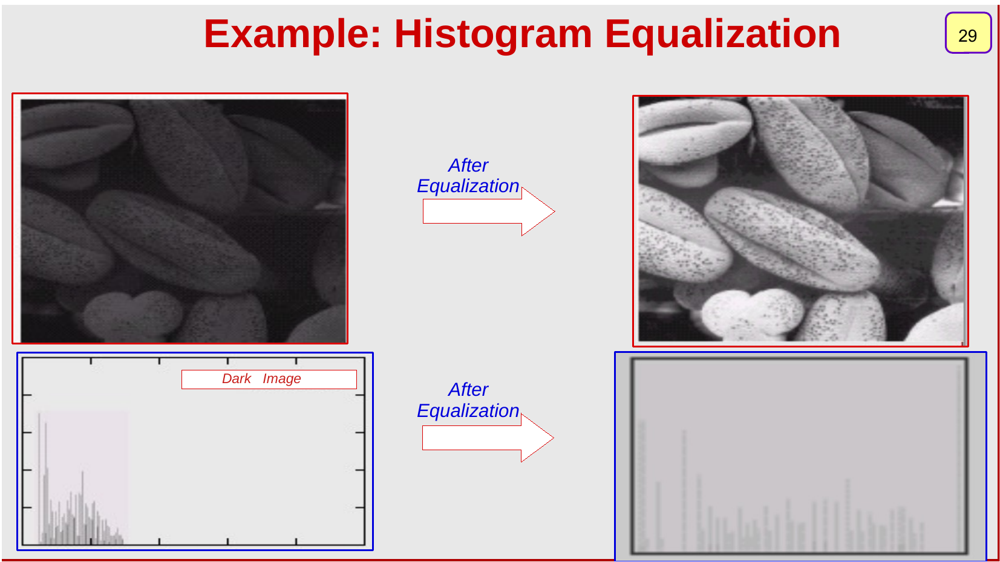
Common exam traps
- Forgetting to round at the end.
- Using $N = $ number-of-levels (e.g. 8) instead of max gray level (7).
- Saying "equalisation produces a perfectly flat histogram" — for discrete images it is only approximately uniform.
Answer
$T(2)=\text{round}(7\cdot 0.84)=\text{round}(5.88)=6$.Answer
False. Equalisation is a many-to-one mapping; distinct levels can merge, never split.s1.3 — Spatial Filters (neighbourhood-based)
Basics of spatial filtering
Why it matters: every later lecture (CNNs, edge detection, SIFT) is a special case of a spatial filter sliding across the image.
Define $g(x,y) = T[f(x,y)]$ where $T$ operates on a neighbourhood (window/mask/kernel) around $(x,y)$. The output pixel at $(x,y)$ is a function of the pixel and its neighbours.
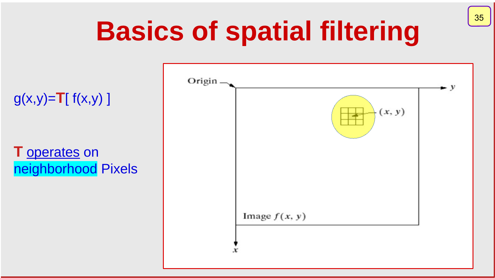
Three families: Smoothing, Order-statistics, Sharpening.
Smoothing filters (linear / averaging / weighted)
Used for blurring and noise reduction; the workhorse before edge detection.
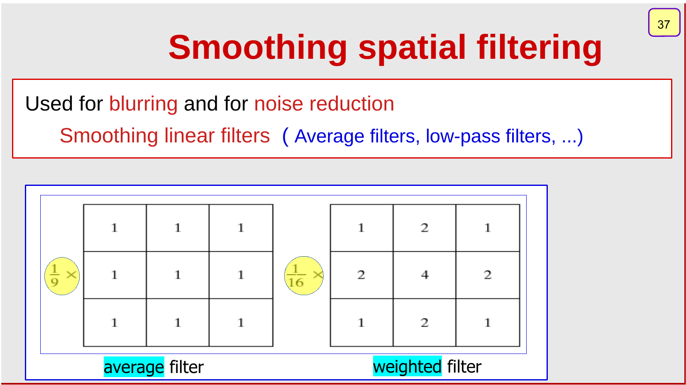
Worked numerical example — apply the box 3×3 to the centre pixel
Window:[10 20 30 40 50 60 70 80 90]Output centre = $\tfrac{1}{9}(10+20+30+40+50+60+70+80+90)=\tfrac{450}{9}=50$. (Sanity check: the centre value is the mean. ✓)
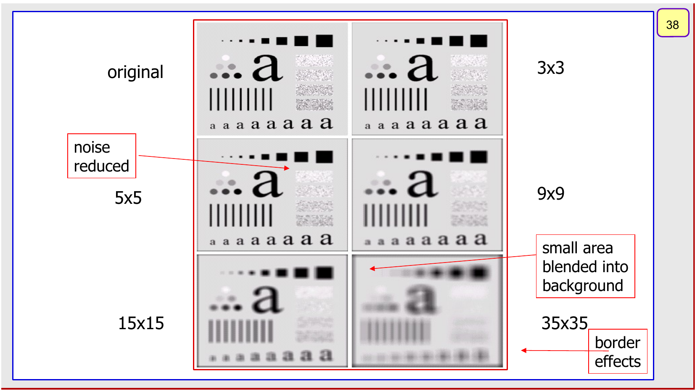
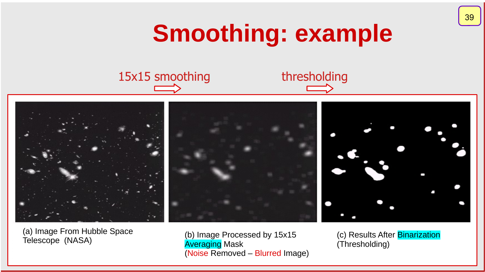
Traps
- Forgetting to divide by the sum of weights → the output saturates / clips.
- "Bigger kernel is always better" — bigger kernels also blur edges; small objects disappear.
b) center=4, edges=2, corners=1, ÷16.
c) center=−4, edges=1, corners=0.
d) center=9, edges=−1, corners=−1.
Answer
b. (a) is the unweighted box; (c) is a Laplacian; (d) is a sharpener.Order-statistics filters (non-linear)
Removes salt-and-pepper noise without blurring edges — averaging cannot do that.
Procedure on a $3\times 3$ window: sort the 9 values → pick min (min filter), median (median filter), or max (max filter).
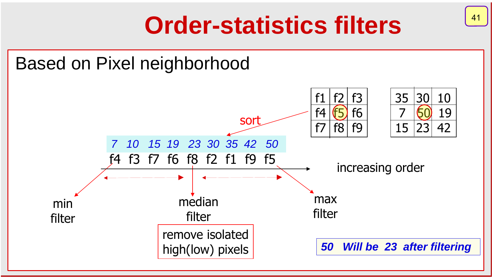
Slide's worked example
Window[35 30 10 7 50 19 15 23 42]Sorted: 7,10,15,19,23,30,35,42,50 → median = 23. So the centre's 50 (the spike) is replaced by 23 — exactly what we wanted.
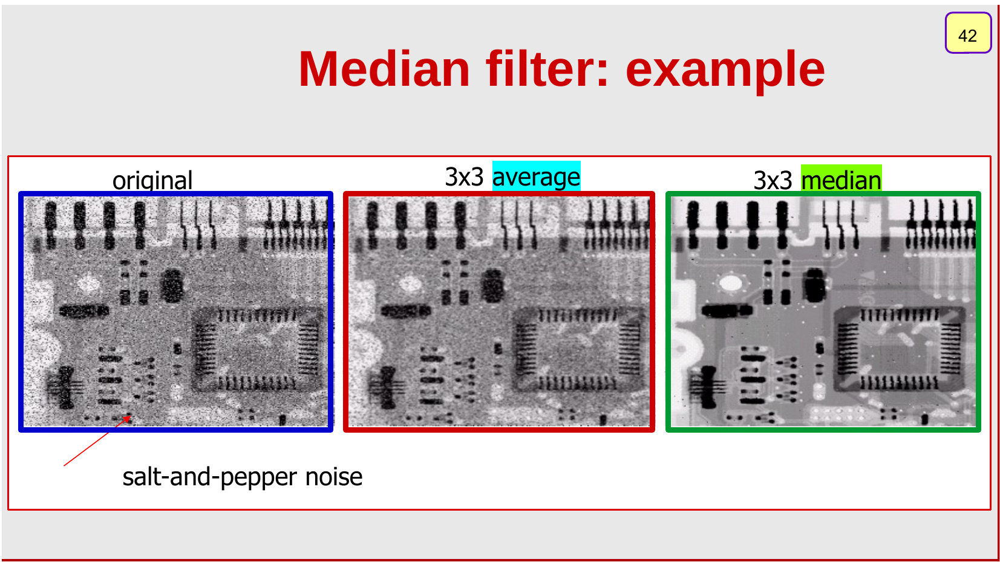
Trap
- "Median filter is linear" — false; it is a non-linear filter (cannot be expressed as a convolution).
Sharpening filters — derivatives & Laplacian
Sharpening is the dual of smoothing; it brings out fine detail and edges. Critical foundation for L02 (frequency-domain high-pass) and L03 (edge detection in SIFT).
Goal: (1) highlight fine detail = spatial differentiation, (2) de-emphasise slowly-varying regions.
Digital first & second derivatives in 1-D:
$$\frac{\partial f}{\partial x}=f(x+1)-f(x)$$
$$\frac{\partial^2 f}{\partial x^2}=f(x+1)+f(x-1)-2f(x)$$
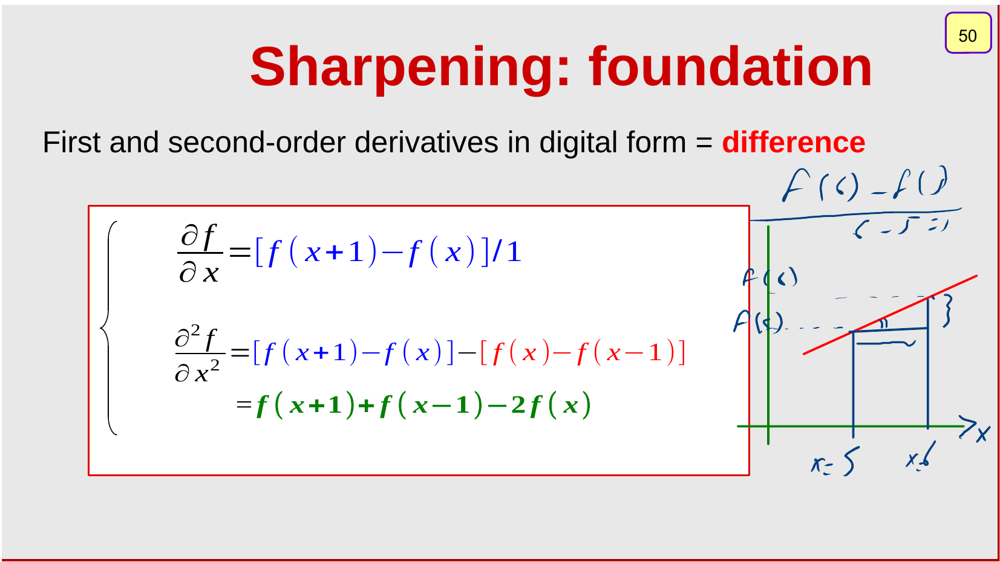
Laplacian in 2-D (isotropic 2nd-order operator):
$$\nabla^2 f = f(x+1,y)+f(x-1,y)+f(x,y+1)+f(x,y-1)-4\,f(x,y)$$
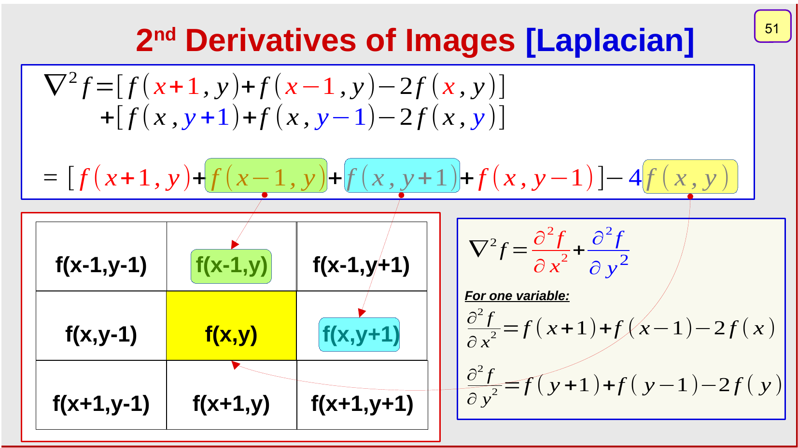
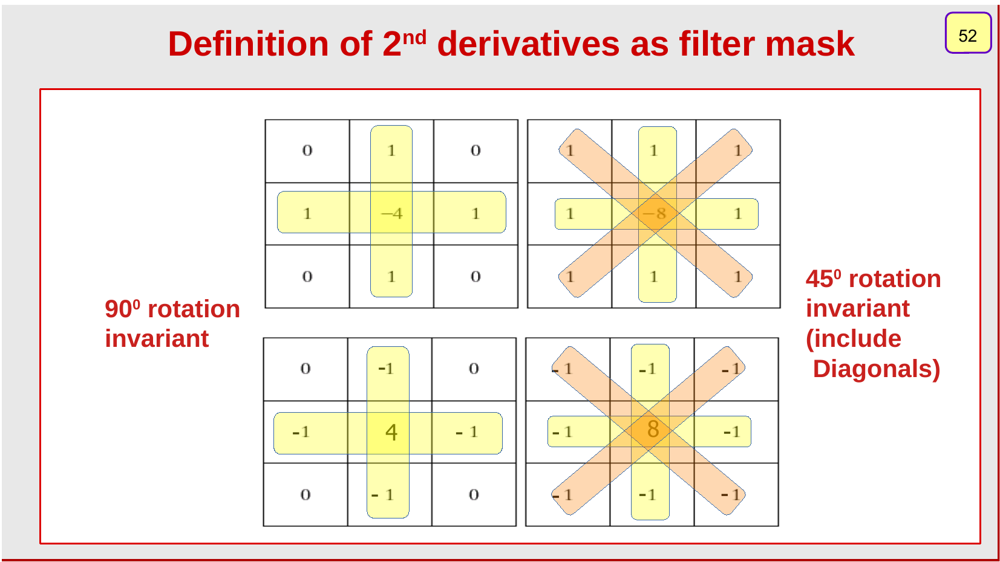
Sharpened image = original ± Laplacian, sign chosen so the centre coefficient is > 0:
$$g(x,y) = \begin{cases} f(x,y)-\nabla^2 f & \text{if centre coeff of the Laplacian mask is }-4 \\ f(x,y)+\nabla^2 f & \text{if centre coeff of the Laplacian mask is }+4 \end{cases}$$
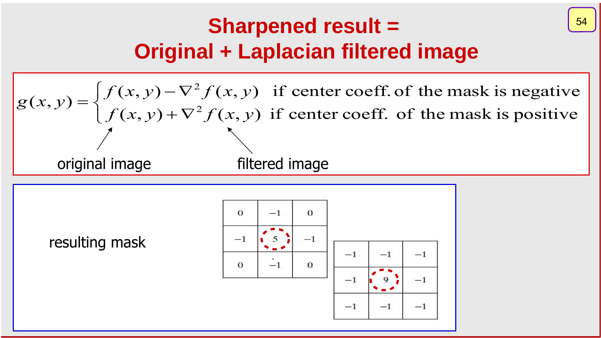
Worked example — apply the 5-centre mask
Window[10 20 30 40 50 60 70 80 90]Centre output = $5\cdot 50 - (20+40+60+80) = 250 - 200 = 50$. (Here the gradient is symmetric — sharpening does nothing. For an edge: window
[10,10,10; 10,10,10; 100,100,100] → centre output = $5\cdot 10 - (10+10+10+100)=50-130=-80$ → clipped to 0; the edge above the centre is enhanced.)
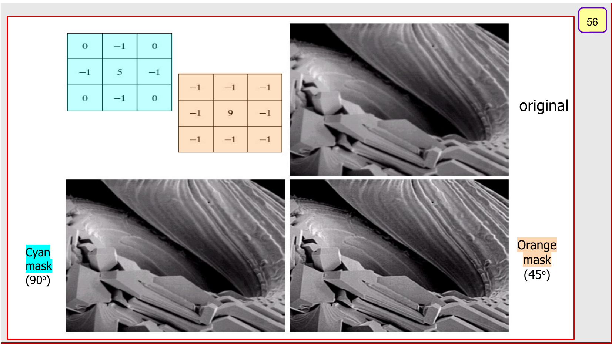
Common exam traps
- Picking the wrong sign in $g = f \pm \nabla^2 f$. Remember: centre + means add, centre − means subtract.
- Confusing 1st-derivative (Sobel-style) and 2nd-derivative (Laplacian) magnitude maps — only the 2nd derivative crosses zero at edges.
- Forgetting that Laplacian is sensitive to noise — usually apply a smoothing first ("LoG" = Laplacian of Gaussian, returns in L02 / L04).